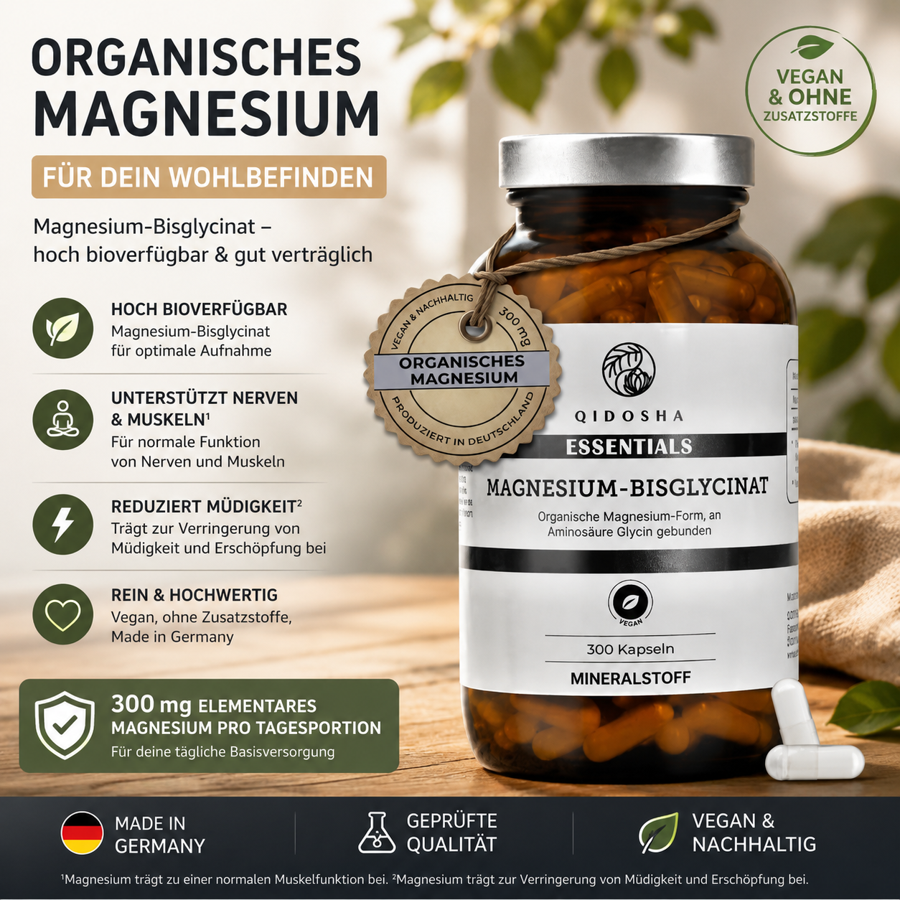

QIDOSHA Magnesium-Bisglycinat
QIDOSHA bietet Magnesium-Bisglycinat in einer größeren Packung mit 300 Kapseln an. Laut Produktangebot werden drei Kapseln täglich empfohlen und liefern 300 mg elementares Magnesium pro Tagesportion. Eine interessante Option, wenn ein möglichst großer Vorrat gesucht wird.
Preis und Verfügbarkeit können sich ändern.